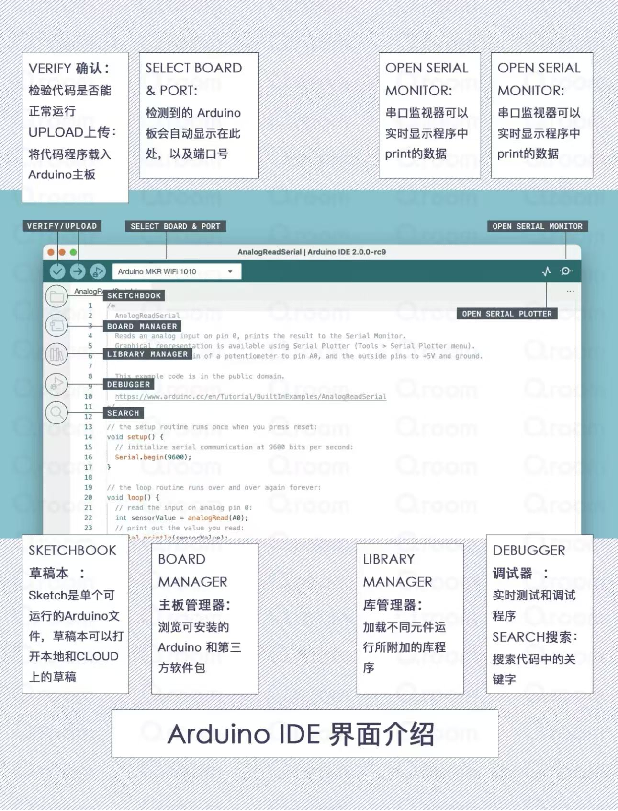
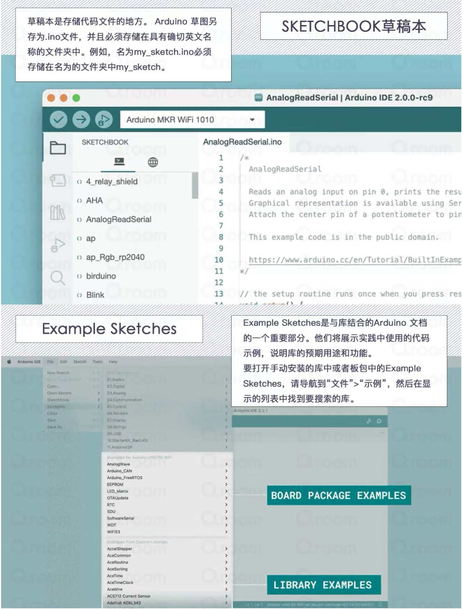
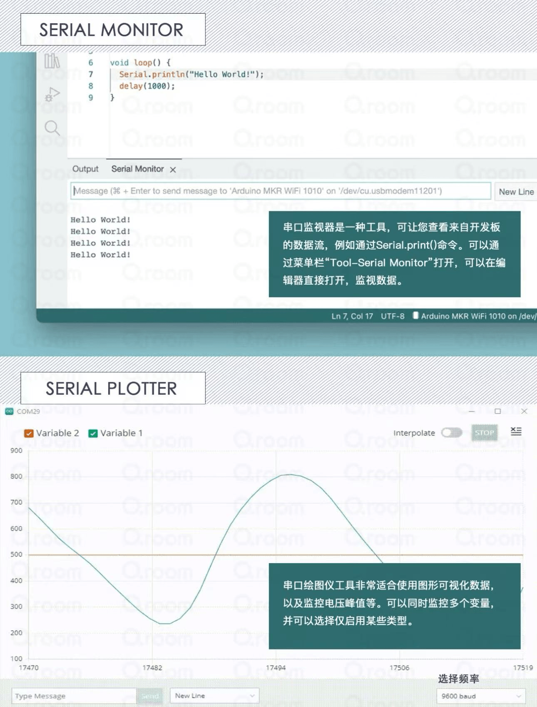
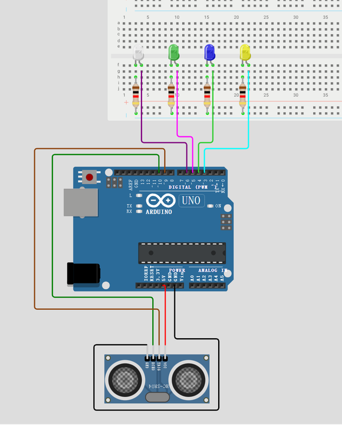
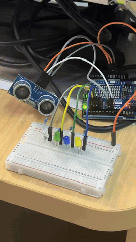

Exercise 2: Arduino
Learning Open Source Hardware - Arduino
1. Learning Open Source Hardware - Arduino

Arduino is an open-source electronic prototyping platform that includes hardware (various Arduino board models) and software (Arduino IDE). Its core advantages are:
- Open Source & Free: Hardware design, software code, and schematics are all open source, allowing free modification and secondary development
- Low Barrier to Entry: Uses simplified C/C++ syntax, no need to delve into microcontroller basics, beginners can get started quickly
- Strong Ecosystem: Massive open-source libraries, sensor modules, and project cases worldwide, capable of achieving almost all electronic creativity
Common Application Scenarios:
- Teaching & Learning: Programming basics (C/C++, logic training), electronics basics (sensors, LEDs, motors, circuits), school courses (information technology, general technology, innovation competitions), graduation projects/course designs (simple smart projects)
- Smart Home: Smart lighting (voice-controlled lights, motion sensor lights, RGB ambient lights), environmental monitoring (temperature/humidity, air quality, light, PM2.5 detection), automatic control (automatic watering, automatic fish feeding, smart curtains), security alerts (door magnetic alarm, infrared intrusion alarm, water leak detection)
- Interactive Art & Installations: Interactive light shows (music rhythm lights, body-sensing light and shadow), new media art installations (touch sensing, sound interaction), stage/exhibition effects (automatically triggered lights, smoke, mechanical actions)
- DIY Electronics: Electronic clocks, thermometers, hygrometers, simple oscilloscopes, Bluetooth/infrared remote switches, wireless doorbells, simple 3D printers, plotters, laser engraver controllers
- Industrial/Lab Applications: Data collection (temperature, pressure, RPM sensor recording), simple automation control (small motor start/stop, solenoid valve control), IoT nodes (upload data to mobile or cloud via WiFi/Bluetooth)
1. Arduino IDE
(1) Introduction
Arduino IDE is an integrated development environment for writing, uploading, and debugging programs based on the Arduino platform. It's an open-source tool that runs on Windows, Mac OS X, and Linux systems. Arduino IDE uses C/C++ language with a simple graphical interface, making it easy for users to write programs. Through this interface, users can easily access various Arduino board libraries and example programs, and quickly write and test their own programs.
Arduino IDE includes a code editor, compiler, uploader, and serial monitor for debugging and viewing program output. Additionally, it supports multiple platforms and programming languages, and can integrate with other open-source tools. Using Arduino IDE, users can develop various Arduino projects such as LED control, sensor reading, robot control, etc. Its ease of use and powerful features make it one of the preferred tools for many makers and engineers.




References:
- 零基础学Arduino-2《 IDE 界面功能介绍》 - View on Xiaohongshu (Little Red Book)
- 📒・Arduino入门・IDE界面介绍 - View on Xiaohongshu (Little Red Book)
(2) Coding Methods
- Structure: An Arduino program consists of two essential functions:
setup()andloop(). Thesetup()function runs only once at program startup for initialization settings, such as pin mode definition and serial port initialization. Theloop()function runs in a loop after thesetup()function executes, controlling the main program logic. - Comments: Using comments improves code readability. You can use double slashes (
//) to add single-line comments, or use slash-asterisk (/* */) to add multi-line comments. - Variables: In Arduino, you can declare and use various variables such as integers (int), floating-point numbers (float), characters (char), and booleans (boolean). Variable names must start with a letter and can contain letters, numbers, and underscores.
- Pin Operations: Arduino's core is interacting with external devices, usually through pins for input and output. Use
pinMode()to set pin mode as input or output,digitalRead()to read pin state, anddigitalWrite()to set pin to HIGH or LOW. - Functions: You can create custom functions to organize code and reuse specific functionality. Functions consist of function name, parameter list, and function body. Execute functions by calling the function name and passing parameters.
- Libraries: Arduino IDE has extensive library support to easily extend its functionality. You can import required libraries using
#includedirective and use library-provided functions and classes to implement specific features. For example, Servo library for servo control, Wire library for I2C communication, etc. - Serial Communication: Arduino boards typically have a serial port. You can use the Serial object for serial communication with computers or other devices. Use
Serial.begin()to initialize serial port, andSerial.print()andSerial.println()to send data to serial port.
(3) Hardware Connection
When using Arduino IDE, hardware connection is very important as it involves physical connections with the Arduino board and external components. Here are the general hardware connection methods when using Arduino IDE:
- Connect Arduino Board: First, connect your Arduino board to the computer via USB cable. This allows you to upload programs to the Arduino board and perform serial communication with it.
- Connect External Circuits: If your project involves external circuits or sensors, you need to connect them to the Arduino board. Typically, this involves using jumper wires to connect sensor or module pins to digital or analog pins on the Arduino board. Ensure correct connection of power and ground pins, as well as necessary signal lines.
- Power Supply: If external components require additional power supply, such as motors, servos, or high-power LEDs, you may need to provide external power instead of drawing directly from the Arduino board. This can be achieved through external batteries, power adapters, or other power modules.
- Upload Program: After writing and debugging your program in Arduino IDE, upload it to the Arduino board via USB cable. Ensure that before uploading, the Arduino board is correctly connected to the computer and the correct board type and serial port are selected.
- Debugging and Testing: Once the program is successfully uploaded, you can use the serial monitor to view program output for debugging and testing. The serial monitor displays information output using
Serial.print()andSerial.println(), helping to understand program execution status.
Running Light Program Execution
(1) Physical Connection Method
- Required Materials: Arduino development board, LED lights (quantity according to your needs), resistors (one per LED, determine resistance value based on selected LED characteristics), jumper wires or breadboard for connection
- Connect Circuit: Connect each LED's anode (long pin) to Arduino's digital output pins. Connect each LED's cathode (short pin) to ground (GND) through a resistor.
(2) Program Execution Method
Writing the Program
- Create a new sketch in Arduino Integrated Development Environment (IDE).
- At the beginning of the program, define the LED pins to be controlled.
- Use loops to turn LEDs on and off one by one to achieve the running light effect.
- You can set delay intervals to control the speed of the running light.

I. Hardware List
- Arduino Uno R4 Minima/WiFi
- HC-SR04 Ultrasonic Module
- 4 LED lights + 220Ω current-limiting resistors ×4
- Breadboard, jumper wires
II. Circuit Wiring Diagram
1. HC-SR04 Ultrasonic Wiring
| HC-SR04 Pin | Arduino R4 Pin |
|---|---|
| VCC | 5V |
| GND | GND |
| Trig | D9 |
| Echo | D10 |
2. Running Light LED Wiring (Common Cathode, Negative Terminal Connected to Resistor)
- LED1 → D3 + 220Ω resistor → GND
- LED2 → D4 + 220Ω resistor → GND
- LED3 → D5 + 220Ω resistor → GND
- LED4 → D6 + 220Ω resistor → GND
Using Ultrasonic Sensor to Complete Running Light Illumination
Implementation Code:
// Ultrasonic pin definitions
const int trigPin = 9;
const int echoPin = 10;
// LED running light pin array
int ledPins[] = {3,4,5,6};
int ledNum = sizeof(ledPins)/sizeof(ledPins[0]);
long distance;
long duration;
void setup() {
Serial.begin(9600);
// Ultrasonic pin modes
pinMode(trigPin, OUTPUT);
pinMode(echoPin, INPUT);
// Set all LEDs as output
for(int i=0; i<ledNum; i++){
pinMode(ledPins[i], OUTPUT);
digitalWrite(ledPins[i], LOW); // Initial light off
}
}
// Get ultrasonic distance function
long getDistance(){
digitalWrite(trigPin, LOW);
delayMicroseconds(2);
digitalWrite(trigPin, HIGH);
delayMicroseconds(10);
digitalWrite(trigPin, LOW);
duration = pulseIn(echoPin, HIGH);
distance = duration * 0.034 / 2;
return distance;
}
void loop() {
distance = getDistance();
Serial.print("Distance: ");
Serial.print(distance);
Serial.println(" cm");
// Trigger running light when less than 30cm
if(distance < 30){
// Forward running
for(int i=0; i<ledNum; i++){
digitalWrite(ledPins[i], HIGH);
delay(150);
digitalWrite(ledPins[i], LOW);
}
// Reverse return flow (optional, comment out to keep only unidirectional running)
for(int i=ledNum-2; i>0; i--){
digitalWrite(ledPins[i], HIGH);
delay(150);
digitalWrite(ledPins[i], LOW);
}
}else{
// No object nearby, all off
for(int i=0; i<ledNum; i++){
digitalWrite(ledPins[i], LOW);
}
}
delay(100);
}

4. Case Studies
Case 1: "Emotion Aid" Project

- Core Objective: Help people with communication barriers (especially autism spectrum) convey their emotional states to the outside world using devices instead of body language
- Hardware Architecture: Arduino Uno Rev3 master controller + capacitive humidity sensor (EDA/GSR) + temperature sensor + pulse sensor + 9V battery power supply
- Output Method: Drive a fan-like device through small servos, changing its shape to express emotions through intuitive physical "fanning" motions
Advantages:
- Novel & Intuitive Output: Uses pure physical motion to express emotions rather than screens or lights, more friendly to sensory-sensitive individuals, and can attract attention and curiosity from surrounding people, opening non-verbal communication.
- Multi-modal Signal Fusion: Integrates three types of physiological signals: skin electrical activity (EDA), body temperature, and heart rate, using "multi-modal fusion" approach to improve emotion inference robustness, more scientific than single sensor.
- Open Source & Community Friendly: As a complete course design, code, circuit diagrams, and structural designs are fully open-sourced on Instructables, using entry-level hardware like Arduino Uno and servos, very convenient for subsequent reproduction and improvement.
Disadvantages:
- Oversimplified Emotion Inference: This is the project's biggest shortcoming. Inferring complex human emotions (such as frustration, anxiety) solely from EDA, heart rate, and temperature is scientifically extremely difficult or even unrealistic. This method simply links complex physiological signals with emotions, making conclusions very fragile.
- Rough Data Fusion & Processing: The project does not seem to effectively denoise or extract features from raw data. For example, motion artifacts severely interfere with pulse and EDA sensor signals, and the project ignores individual physiological baseline differences, reducing inference universality.
- Suboptimal Wearing Position: Design attached to underwear limits gender applicability, and this position is greatly affected by breathing and body movement, easily introducing interference.
- Battery & Durability Issues: 9V battery has limited capacity,难以 support long-term use and drive servo current requirements.
- Risk of Emotional Labeling: Emotional states are crudely simplified to a single mode. When the device "judges" incorrectly, it may传递 wrong information, causing social misunderstandings or negative labels, which contradicts the original intention of helping communication.
Case 2: UESTC Professor Xu Peng's Team - "Wireless Brain Function Assessment System" and "Autism Precision Neuromodulation Technology"
Case Link: https://www.new1.uestc.edu.cn/?n=UestcNews.Front.DocumentV2.ArticlePage&Id=96164
- Core Objective: Provide objective, quantitative auxiliary diagnosis and precise intervention for autism, benefiting over 3,000 children domestically and internationally.
- Hardware Architecture: Based on wireless dry-electrode EEG cap (non-invasive) and targeted transcranial magnetic stimulation device, no conductive gel required.
- Core Technology: Auxiliary diagnosis uses AI algorithms integrating deep learning and transfer learning to identify brain network abnormalities (>90% accuracy); intervention precisely locates superficial nodes to indirectly regulate deep brain regions.
Advantages:
- Pioneered "Quantitative Diagnosis" Paradigm: Combined EEG signals with AI algorithms to transform diagnosis from experience-based "qualitative judgment" to data-supported "quantitative diagnosis", achieving major clinical breakthrough.
- High User-Friendliness Experience: Wireless dry-electrode EEG cap for diagnosis and short-duration treatment mode (3 times daily, 40 seconds each) greatly improved comfort and cooperation of autistic children.
- "Deep Brain" Intervention Possible: Targeted transcranial magnetic therapy indirectly regulates deep brain regions through superficial "relay stations", providing new path for solving deep brain region intervention难题, achieving over 80% effectiveness.
Disadvantages:
- High Technical Threshold & Cost: BCI and TMS equipment研发 and manufacturing costs are high,短期内可能主要面向 tertiary hospitals or professional rehabilitation institutions, difficult to普及.
- Physiological Signal Common Limitations: EEG signals themselves have low signal-to-noise ratio and are easily interfered with;后期 processing and AI model training require extremely high algorithm standards,存在一定的误判风险.
- Institutional Application Scenario Constraints: The entire system requires professional场地 operation,难以 serve as home daily intervention equipment,无法像可穿戴产品那样提供全天候支持.
- Long-term Safety & Effectiveness Pending Verification: Although effectiveness exceeds 80%, this evaluation多源于 short-term clinical observations; long-term impacts of transcranial magnetic stimulation仍需更长时间跨度的跟踪研究.
- "Black Box" Problem & Attribution Dilemma: AI algorithms虽 accurate but decision logic is opaque to humans. Doctors难以判断 AI得出某结论的具体依据,增加了诊断复核的难度.
Summary
Through this exercise, we learned:
- The core concepts and application scenarios of Arduino open-source hardware platform
- Arduino IDE usage, coding methods, and hardware connection techniques
- How to write and upload running light programs controlled by ultrasonic sensors
- Analyzed two real-world cases applying Arduino technology to assist autistic individuals
- Understanding both innovative solutions and existing challenges in assistive technology